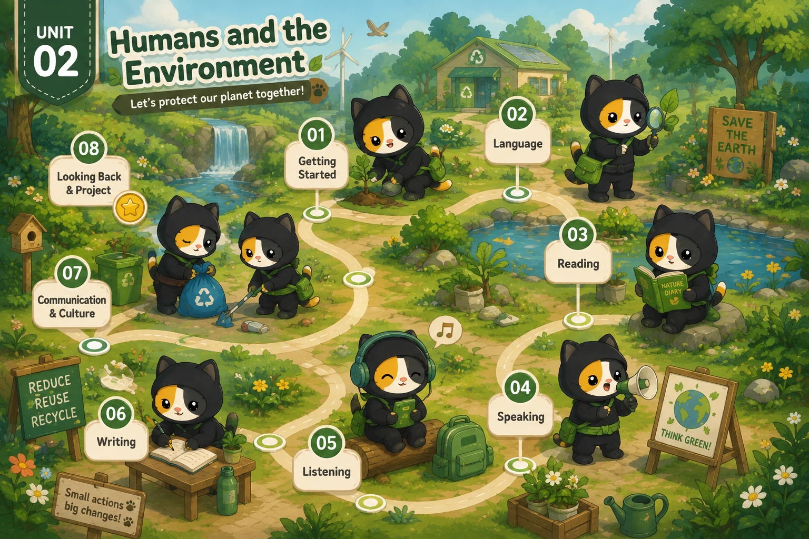

Lesson 1 · Getting started — Go Green Club Lesson 2 · Language Lesson 3 · Reading: Green living Lesson 4 · Speaking: Green living habits Lesson 5 · Listening: Go Green Weekend Lesson 6 · Writing: Ways to improve the environment Lesson 7 · Communication and Culture / CLIL Lesson 8 · Looking back and ProjectBấm vào thẻ tiết để mở bài giảng. Cả 8 tiết đã dựng xong. Dựng xong tiết nào thì mở khoá thẻ đó.